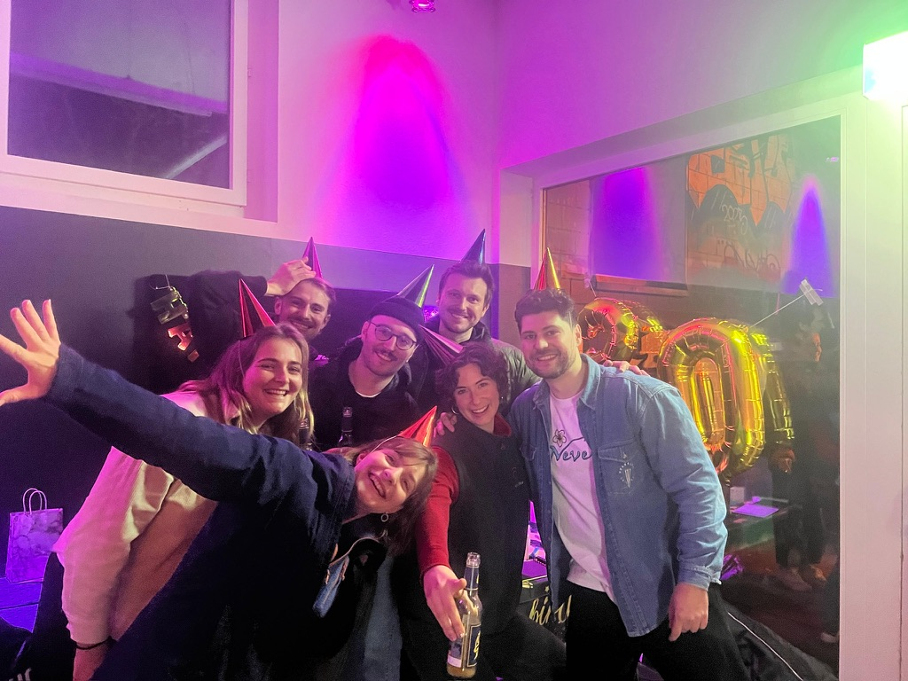
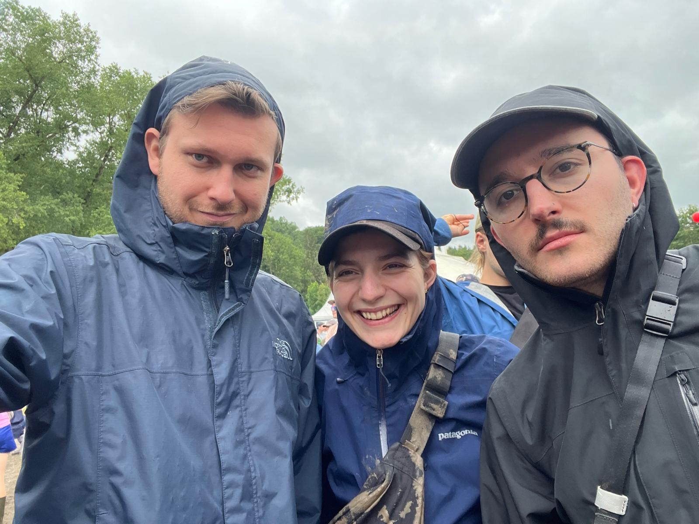
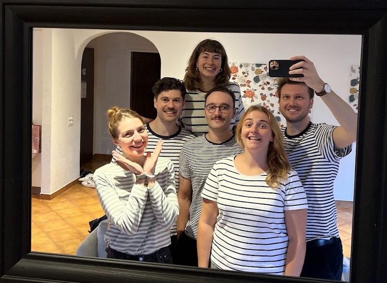
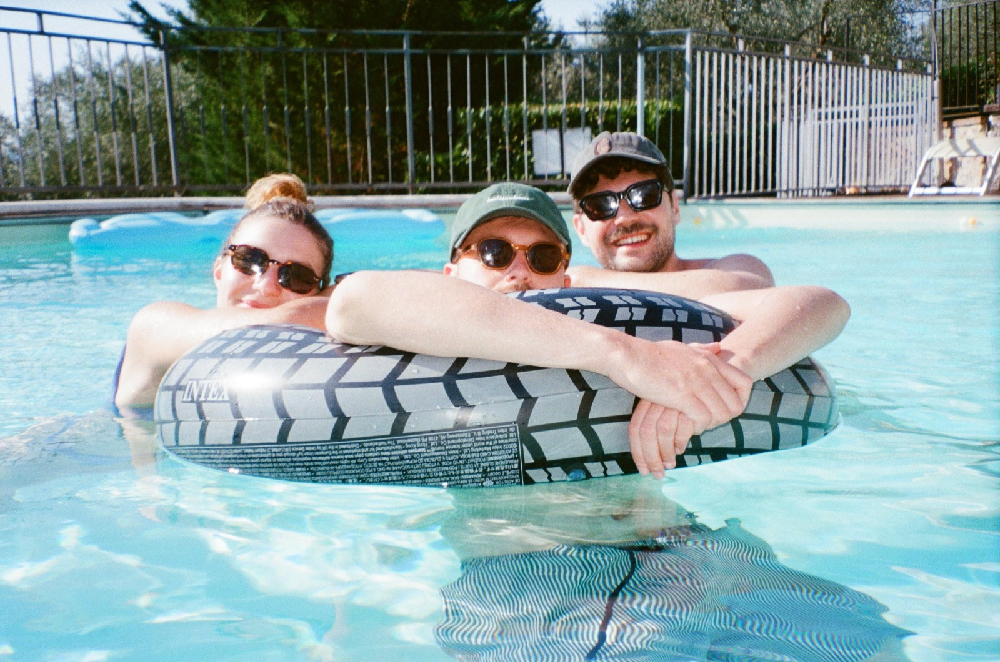
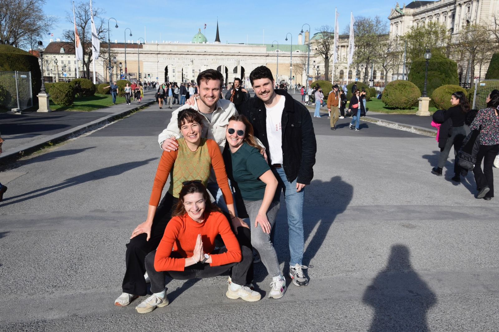
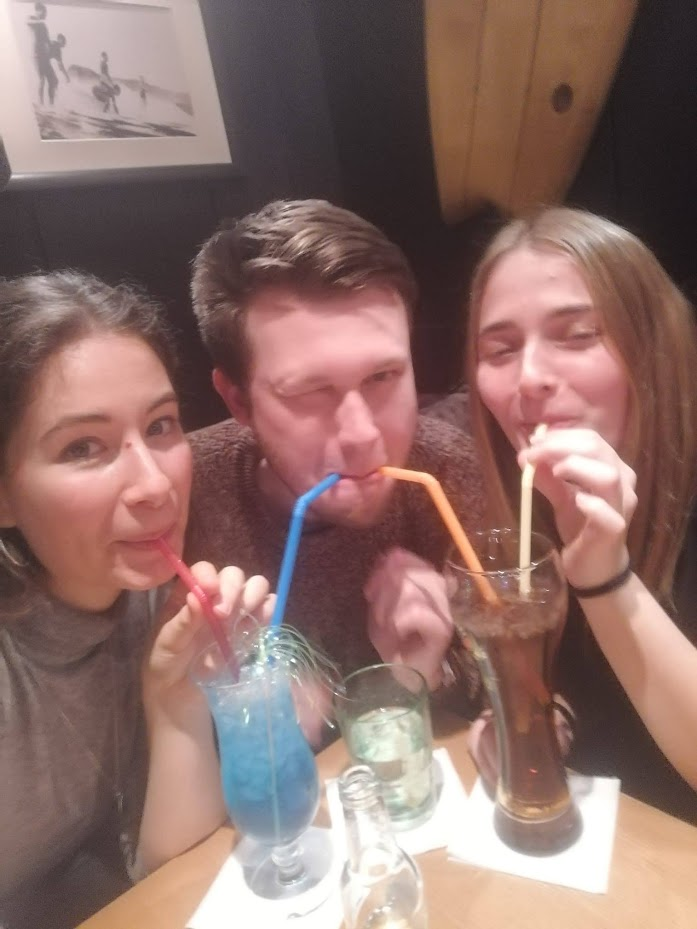

Unser geliebter Yannick, du ziehst um – aber du nimmst uns alle im Herzen mit. Hier sind unsere schönsten Erinnerungen und alles, was du für den Start in deiner neuen Stadt wissen musst.
Ein paar (viele!) Momente aus den letzten Jahren – bevor du in Den Haag neue dazu sammelst.






Alles, was wir für dich zusammengetragen haben – zum Ankommen, Entdecken und Einleben.